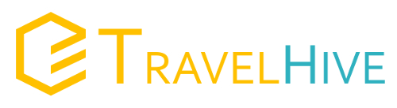

In high school, I created an HTML website for the dance studio I attended, working closely with the owner to bring her vision to life while ensuring every visual and technical detail was perfect. I also created a website, brochures, forms and other documents for a pain management medical practice. I spent hours happily absorbed in this detail-oriented work. As I got older, my passion for sustainability drew me to environmental engineering.
My interest in programming, web development, and web design has drawn me to taking various online courses over the years. Additionally, I completed the LaunchCode CoderGirl STL C#/.NET 6 month course in 2019. Check out my education page here to follow my progress!
Designed and developed a responsive beta sign up page for:
With over ten years of engineering experience, I know about design.
Ensuring that a wastewater treatment facility is designed, built, and operated correctly is detail oriented work that has made me an expert at:
I enjoy finding out how things are built, what makes them work, and how to improve efficacy.
Please visit my LinkedIn for more details